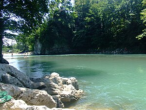
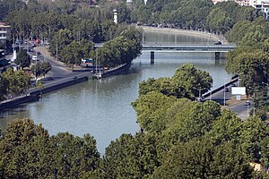
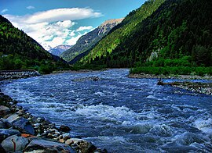

ტეხური — მდინარე დასავლეთ საქართველოში, სამეგრელო-ზემო სვანეთის მხარის მარტვილისა და სენაკის მუნიციპალიტეტების ტერიტორიაზე. სათავე აქვს ეგრისის ქედის სამხრეთ კალთაზე, მწვერვალ ტეხურიშდუდთან, ზღვის დონიდან 2400 მ სიმაღლეზე. მდინარე რიონს ერთვის მარჯვნიდან. სიგრძე 108 კმ, აუზის ფართობი 1040 კმ². მთავარი შენაკადია მდინარე აბაშა. საზრდოობს წვიმის, თოვლის და მიწისქვეშა წყლით. წყალდიდობა იცის გაზაფხულზე, წყალმოვარდნები — მთელი წლის მანძილზე. საშუალო წლიური ხარჯი ნოქალაქევთან 31,8 მ³/წმ. იყენებენ ხე-ტყის დასაცურებლად და სოფლის წისქვილებისათვის. ხეობის ზემო ნაწილში მდებარეობს კურორტი ლებარდე.[1]
მდინარის აუზში 503 შენაკადია, საერთო სიგრძით 1047 კმ. ძირითადი შენაკადები, რომელთა სიგრძე 10 კმ-ზე მეტია არის ხუთი: მარცხენა მდინარე ჩხოროწყუ (11 კმ), მარცხენა მდინარე წაჩხურა (12 კმ), მარჯვენა მდინარე გურძენი (20 კმ), მარჯვენა მდინარე ნახური (11 კმ), მარცხენა მდინარე აბაშა (66 კმ). აბაშის აუზის შეერთების შემდეგ ტეხურის აუზი ღებულობს ასიმეტრიულ ფორმას. მდინარის სიმჭიდროვის კოეფიციენტი ტოლია 1.01 კმ/კმ
მდინარის კალაპოტი ზომიერად კლაკნილია და ძირითადად დაუტოტავი. სოფელ დობერაზენის მიდამოებში იყოფა 2-3 ტოტად, რის გამოც წარმოიქმნება დაბალი, არამდგრადი კუნძულები კენჭნარ-ქვიშოვანი ზედაპირით. მდინარის კალაპოტისთვის დამახასიათებელია, საშუალოდ ყოველ 30-50 მეტრში, მუხლები და ჩქერები. მდინარის კალაპოტის სიგანე იცვლება 2 მ-დან (სათავიდან 2,5 კმ-ს ქვემოთ) 20 მ-მდე (სოფ. დობერაზენში). ძირითადად ჭარბობს 5 მ. სიღრმეები მუხლებთან შეადგენს 0,3-1,6 მ-ს, ხოლო ჩქერებთან 0,4-5 მ-ს.[2]
დააჭირე ამას თუ გინდა მეტის ნახვა ტეხურეზემტკვარი (თურქ. Kura, აზერ. Kür) — ამიერკავკასიის უდიდესი მდინარე, სათავე აქვს თურქეთში 2742 მ-ზე, ყიზილ-გიადუკის მთის აღმოსავლეთ კალთაზე. ერთვის კასპიის ზღვას აზერბაიჯანის ტერიტორიაზე. სიგრძე 1515 კმ[1], აუზის ფართობი 188 ათ. კმ². საქართველოში მოქცეულია მტკვრის შუაწელის დაახლოებით 400 კმ მონაკვეთი. მტკვარი ყველაზე გრძელია აზერბაიჯანში, სადაც მისი სიგრძე 906 კმ-ს უდრის. მტკვრის აუზი მოიცავს: სომხეთის ტერიტორიას მთლიანად, აზერბაიჯანისა და საქართველოს ტერიტორიის დიდ ნაწილს, აგრეთვე თურქეთისა და ირანის ტერიტორიის ნაწილს.
მტკვრის აუზი მოიცავს: სომხეთის ტერიტორიას მთლიანად, აზერბაიჯანისა და საქართველოს ტერიტორიის დიდ ნაწილს, აგრეთვე თურქეთისა და ირანის ტერიტორიის ნაწილს.>
დააჭირე ამას თუ გინდა მეტის ნახვა მტკვარზერიონი — მდინარე დასავლეთ საქართველოში. სიგრძე 327 კმ, მდინარის აუზის ფართობი 13 400 კმ². სათავე აქვს კავკასიონის სამხრეთ კალთაზე ფასის მთაზე, ზღვის დონიდან 2960 მ. ერთვის შავ ზღვას ფოთთან. სათავიდან სოფელ გლოლამდე მიედინება სამხრეთ-აღმოსავლეთისკენ განიერ, ღრმა ხეობაში, რომელიც მდინარე ზოფხიტურის შეერთებამდე ტროგულია. ივითარებს განიერ ჭალას და იტოტება. ადგილ საგლოლოს ქვემოთ მიედინება ჯერ სამხრეთისკენ, შემდეგ — სამხრეთ-დასავლეთისკენ ღრმა და ვიწრო ხეობაში, ივითარებს ვიწრო წყვეტილ ჭალას. ონთან უხვევს დასავლეთისკენ და მიედინება სოფელ ალპანამდე. ხეობა აქ ღრმა და განიერია, აქვს ფართო ჭალა, რომელიც წყალდიდობის დროს თითქმის მთლიანად იტბორება. მდინარე იტოტება და წარმოშობს კუნძულებს. ჩამოყალიბებულია ტერასები, რომელთა სიმაღლე 2-3-იდან 20-35 მ-მდეა, სიგრძე 2-3 კმ, სიგანე რამდენიმე ასეული მეტრია. ტერასებზე გაშენებულია სოფლები, ბაღ-ვენახები, ბოსტნები და ნათესები. ხეობა ზოგან შევიწროებულია, ქმნის კლდეკარს (ხიდიკრის კლდეკარი). სოფელ ალპანიდან რიონი მკვეთრად უხვევს სამხრეთისკენ და ვიწრო ხეობაში გაედინება, მხოლოდ ალაგ-ალაგ განივრდება და იტოტება. სოფელ ტვიშთან ქმნის ღრმა კლდეკარს. ქუთაისის ქვემოთ, კოლხეთის დაბლობზე გამოდის, ივითარებს განიერ ჭალას, იტოტება და წარმოშობს კუნძულებს.
რიონი სოფელ ვარციხესთან უხვევს დასავლეთისკენ და ამ მიმართულებით მიედინება შესართავამდე. განსაკუთრებით განიერია ჭალა ვარციხიდან სოფელ ბაშამდე. აქ ის დატოტვილია, წარმოშობს მრავალ კუნძულს, რომელთა ნაწილი წყალდიდობის დროს იტბორება.
დააჭირე ამას თუ გინდა მეტის ნახვა რიონზე